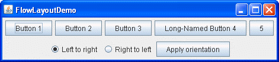

Lección: Disponer Componentes Dentro de un Contenedor
Cómo Usar FlowLayout
Nota: Esta lección cubre la escritura de código de diseño a mano, lo cual puede ser desafiante. Si no está interesado en aprender todos los detalles de la gestión del diseño, preferirá usar el gestor de diseño
GroupLayout combinado con una herramienta de construcción para diseñar su IGU.
Una de tales herramientas de construcción es el
EID NetBeans. De otra manera, si quiere
codificar a mano y no quiere usar GroupLayout, entonces se recomienda GridBagLayout
como el gestor de diseño más flexible y potente.
Si está interesado en usar JavaFX para crear su IGU, vea Trabajar Con Diseños en JavaFX.
La clase
FlowLayout proporciona una gestor de diseño muy simple que es usado, por defecto, por los
objetos JPanel. La siguiente figura representa una captura de una aplicación que usa el diseño
de flujo:

Pulse el botón Lanzar para ejecutar FlowLayoutDemo usando Java™ Web Start ( descargue KDJ 7 o posterior). Alternativamente, para compilar y ejecutar el ejemplo usted mismo, consulte el índice de ejemplos.
El código completo de esta demostración está en el fichero
FlowLayoutDemo.java.
La clase FlowLayout coloca los componentes en una fila, dimensionados a su tamaño preferido. Si el
espacio horizontal en el contenedor es demasiado pequeño para colocar todos los componentes eun una fila, la
clase FlowLayout usa múltiples filas. Si el contenedor es más ancho de lo necesario para una fila
de componentes, la fila es, por defecto, centrada horizontalmente dentro del contenedor. Para especificar que
la fila está alineada a la izquierda o a la derecha, use un constructor de FlowLayout que
tome un argumento de alineación. Otro constructor de la clase FlowLayout especifica cuánta
cantidad de relleno vertical o horizontal es colocado alrededor de los componentes.
El trozo de código de bajo crea un objeto FlowLayout y los componentes que maneja.
FlowLayout experimentLayout = new FlowLayout();
...
compsToExperiment.setLayout(experimentLayout);
compsToExperiment.add(new JButton("Button 1"));
compsToExperiment.add(new JButton("Button 2"));
compsToExperiment.add(new JButton("Button 3"));
compsToExperiment.add(new JButton("Long-Named Button 4"));
compsToExperiment.add(new JButton("5"));
Seleccione la opción Izquierda a Derecha o la opción Derecha a Izquierda y pulse el botón Aplicar orientación
para configurar la orientación de los componentes. El trozo de código siguiente aplica la orientación Izquierda
a Derecha a los componentes de experimentLayout.
compsToExperiment.setComponentOrientation(
ComponentOrientation.LEFT_TO_RIGHT);
La IPA de FlowLayout
La siguiente tabla lista los constructores de la clase FlowLayout.
| Constructor | Propósito |
|---|---|
FlowLayout()
|
Construye un nuevo objeto FlowLayout con una alineación centrada y rellenos horizontales
y verticales con el tamaño por defecto de 5 pixeles.
|
FlowLayout(int align)
|
Crea un nuevo gestor de diseño de flujo con la alineación indicada y los rellenos horizontales y
verticales con el tamaño de 5 píxeles. El argumento de alineación puede ser
FlowLayout.LEADING,FlowLayout.CENTER, o FlowLayout.TRAILING.
Cuando el objeto FlowLayout controla un contenedor con una orientación de componentes de
izquierda a derecha (por defecto), el valor LEADING especifica que los componentes sean
alineados a la izquierda y el valor TRAILING especifica que los componentes sean alineados
a la derecha.
|
FlowLayout (int align, int hgap, int vgap)
|
Crea un nuevo gestor de diseño de flujo con la alineación indicada y los rellenos horizontales y
verticales indicados. Los argumentos hgap y vgap especifica el número de
píxeles para colocar entre los componentes.
|
Ejemplos que Usan FlowLayout
La siguiente tabla lista ejemplos de código que usan la clase FlowLayout y suministran enlaces
a las secciones relacionadas.
| Ejemplo | Dónde Se Describe | Notas |
|---|---|---|
FlowLayoutDemo
|
Esta página |
Configura un panel de contenido usa FlowLayout. si establece la constante
RIGHT_TO_LEFT a true y recompila, puede ver cómo FlowLayout
maneja un contenedor que tiene una orientación de componentes de derecha a izquierda.
|
CardLayoutDemo
|
Cómo Usar CardLayout |
Centra un componente muy bien en la parte superior de un BorderLayout, y colocando el
componente en un JPanel que usa un FlowLayout.
|
ButtonDemo
|
Cómo Usar Botones, Casillsa de Verificación, y Botones de Radio |
Usa el FlowLayout por defecto de un JPanel.
|
TextInputDemo
|
Cómo Usar Campos de Texto Formateado |
Usa un panel con un FlowLayout alineado a la derecha presentando dos botones.
|